I made this game for my A level coursework. I originally designed the game to be like a mix of the Forza Horizon games, Forza Motorsport games and Dirt Rally games, with rally courses, race tracks and an open world to explore. Yes, this was pretty ambitious for the A level project, but it went pretty well considering the time I had for it. For the development, I split the work to do into different sections, so I could focus on individual elements seperately which made it easier for me to develop and visualise what I had to do.
Okay, I'll get the boring bit out of the way first, my original menu was very plain and boring, as I wanted to get it all working before I make it look good. I had very simple menu navigation, with the option to pick from 5 different race circuits and rally courses from seperate menus, and the button to go to the open world. |
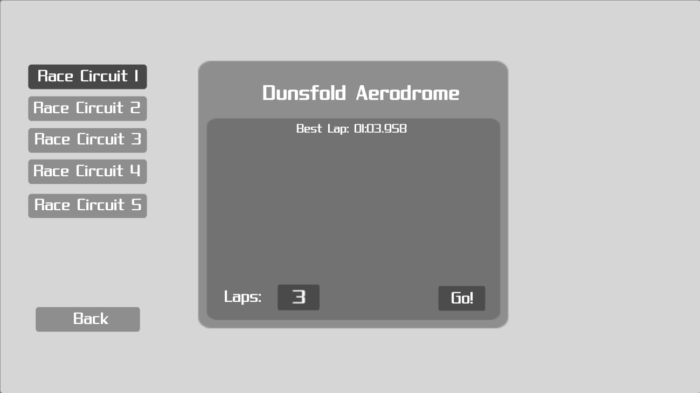 |
| 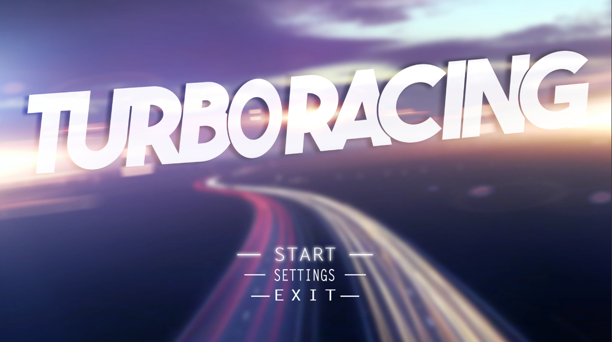 | The redesigned menu had a cool design for a background and buttons that my friend designed for me as he was interested in graphic design at the time, and the sub-menus had a blurred effect to keep the menus and settings/race descriptions clear and readable and the main focus of the screen. |
I also made a settings menu, which used a SettingsManager class, so I could use the same settings menu in the in-game pause menu. I originally planned to have audio, controls and game settings, however, I only had time to do the audio settings at the time. |
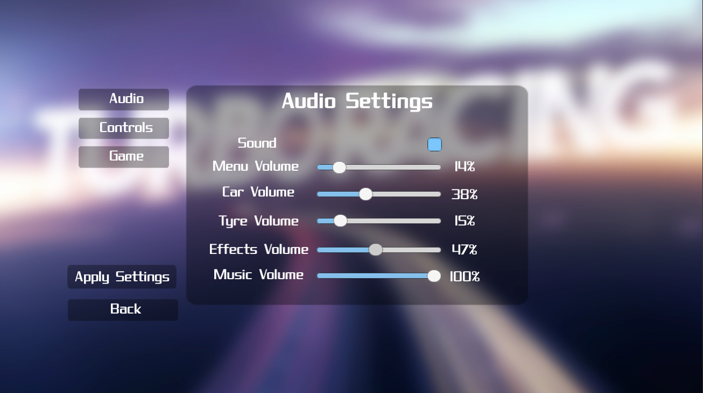 |
Now here's the more interesting stuff. At the time, I probably wasn't good enough to code a working, controllable car in the time I had, so instead, I took the Unity standard assets car and modified it to look like real world cars, added controllable headlights, tail lights, indicators and hazard lights, which I thought were a cool addition. I also changed the variables per car to make each car drive differently, and drive differently when the wheel colliders touch a 'grass' collider which I implemented later when making the environments. In total I had 4 cars, mostly based off of which 3D models I could find easily for free with the level of quality that I wanted. I had a Lamborghini Aventador, Lamborghini Aventador SV, Honda F1 car, and a Range Rover
| 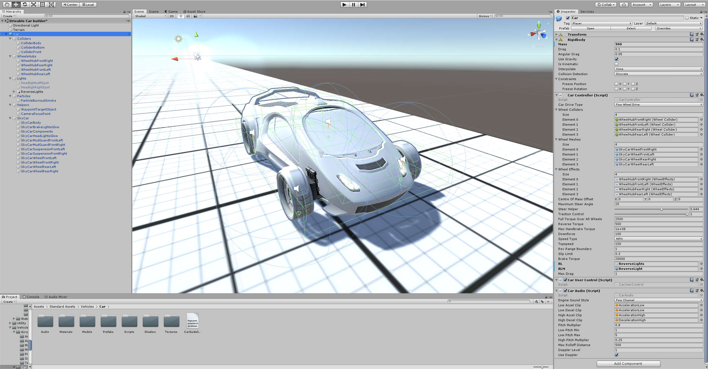 | 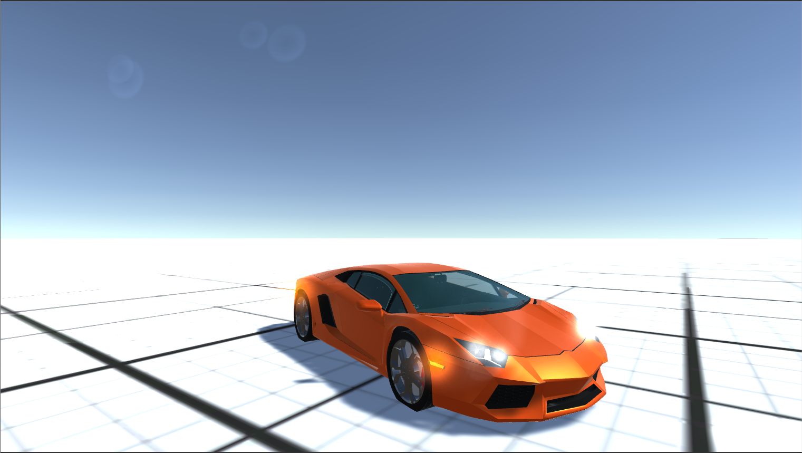 | 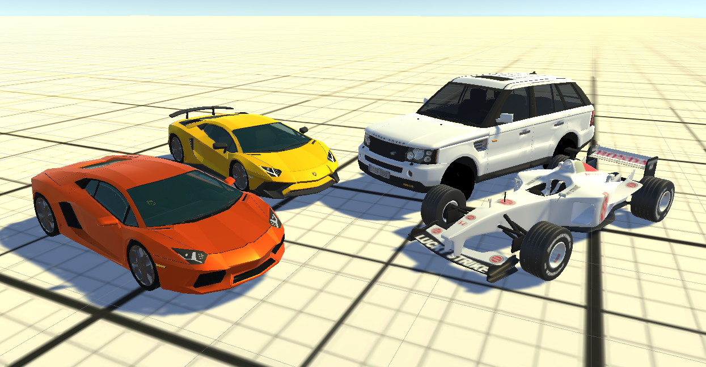 |
I created a third person camera which aims towards the velocity direction, with some help from the internet, so it acts more like a camera from an actual racing game. I made a few modifications to the camera code to allow the user to quickly look behind them by pressing the left mouse button, and look around the car by holding the right mouse button, which are common features for third person racing games. I also added an interior camera, which can be toggled by pressing the 'c' key, and you can also look around in that view as well.
| 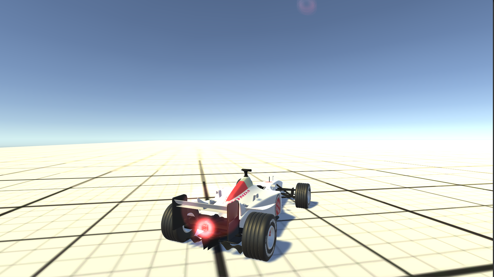 | 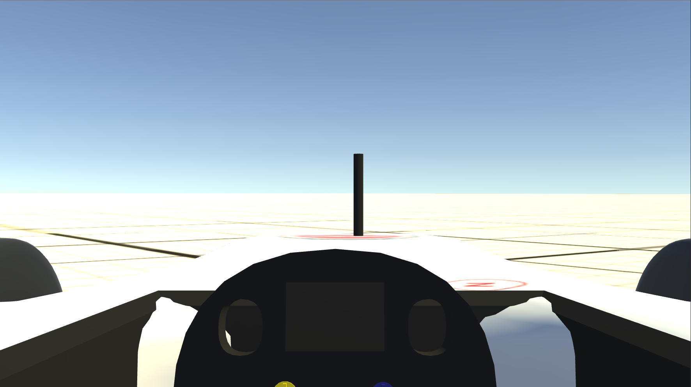 | 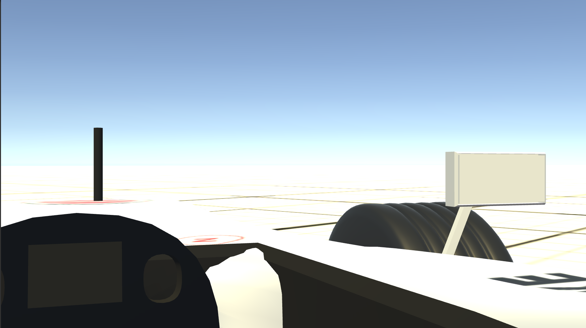 |
I created a simple menu for selecting your car before you go into a race, rally or the open world that appears after the event is picked from the main menu. The car's model is displayed and constantly rotates to show off the car that is currently selected. |
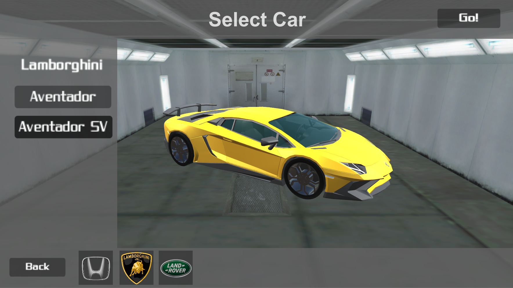 |
I only had time to make one race track and one rally course as well as a barebones open world for the coursework. For both the race and the rally gamemodes I used visible checkpoints for the user to know where to go, as well as a UI to see their race progress.
The race track was modelled after the Top Gear test track from a aerial picture from Google Maps, and then textured by looking at it side-by-side with the track on Forza Motorsport 6. I added props to match the track similarly to Forza and used invisible barriers to prevent the user from going too out of bounds. |
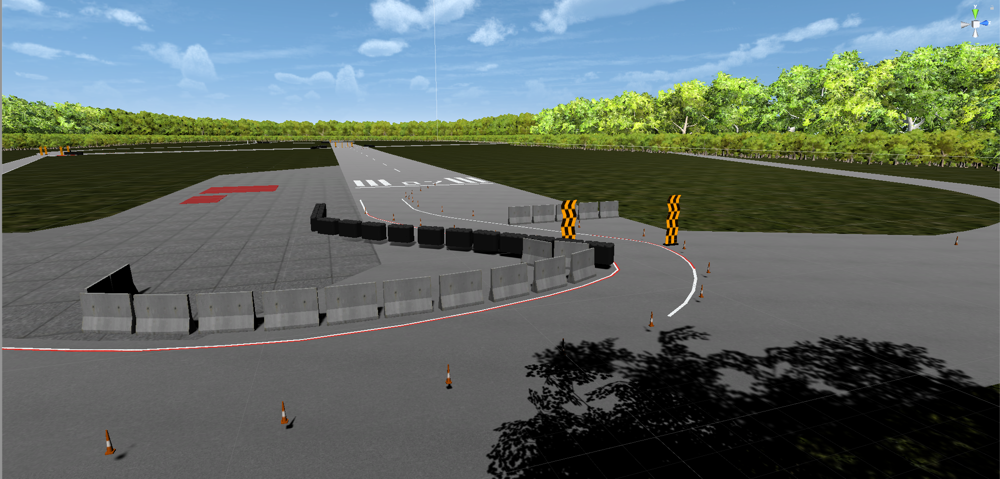 |
 |
The rally course was made using a Unity terrain model of a mountain island found on the internet, where I then painted on the course using Unity's terrain editor. The checkpoints work in a similar way as the race, however, there are no laps, it is instead a point-to-point race. |
The best lap time or overall time would be saved at the end if it beats the previous record and then shown on the main menu.
Overall, this was a very fun A level project and I think I did pretty well on it overall. I'd quite like to revisit something similar to this game in the future, as I know I can do a lot better with it now I know more about game development, and I would quite like to do all the sounds, 3D modelling and texturing myself next time to develop those skills further. If I end up doing that sort of project later, it'll definitely end up on this site.